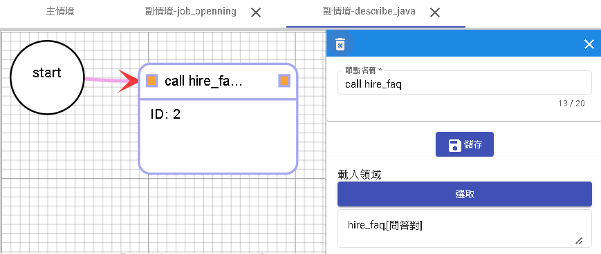

機器人範例
簡單設計招募機器人步驟。
規劃
首先先規畫要做什麼、怎麼做。
- 確定面試過程需要收集的資訊：
- 考慮面試過程中需要收集的各種資訊，例如個人資料（姓名、聯絡方式）、求職問題、心理測驗或簡單測驗等。
- 決定資訊的分類方式：
- 根據資訊的性質和用途，將其分類到適當的節點類型中。例如，個人資料可以放在意圖型中，求職問題可以放在問答對或知識庫中，而心理測驗則可以使用機器人流程設計或意圖型。
- 考慮意圖型和實體：
- 如果您決定將某些資訊放在意圖型中，則需考慮是否需要建立相應的意圖和實體。例如，如果您希望收集求職者的教育背景，可以建立一個「教育背景」意圖，並為該意圖創建相關的實體（例如學校名稱、學位等）。
- 設計機器人流程：
- 對於特定的流程或問題集，您可以使用機器人流程設計來指導面試過程。這可能涉及對問題的提問和收集回答、根據回答進行相應的路由、給予回饋或指示等。確保您設計的流程能夠順利引導面試過程並收集所需的資訊。
步驟一 建立問答對
在問答對節點中，點擊「新增問答對」，建立問答對庫。
- 1.在「問題」欄位中輸入問題，例如job_openning「工作機會」。
- 2.在「回答」欄位中輸入相應的回答或指示，例如「轉向 job_openning」。
- 3.繼續新增其他問答對，例如「福利待遇」、「公司文化」、「介紹JAVA工程師」和「面試JAVA工程師」，並填入相應的回答或指示。
- 福利待遇[文本 準時付薪水]
- 公司文化[文本 做客戶喜愛且有用的產品]
- 介紹JAVA工程師[轉向 describe_java]
- 面試JAVA工程師[轉向 java_test]
- 4.在右上角的「問答對領域」選單中，點擊「新增領域」。
- 5.給這個問答對領域取名為「hire_faq」（或任意您喜歡的名稱）。
- 6.在「問答對節點」中，選擇剛剛建立的問答對領域「hire_faq」。
這樣就建立了一個問答對庫並連結到問答對領域「hire_faq」。您可以根據需求繼續新增其他的問答對和領域。

步驟二 建立意圖
我們將新增一個名為 "hire_int" 的意圖類，並在其中添加以下意圖：
- 1.意圖："greeting"，表示招呼意圖。可以包含一些招呼的說法，例如 "hi"、"你好"、"嗨"、"開始" 等。
- 2.意圖："basic_info"，表示取得測試者的基本資料。您可以設定需要的實體，以下是一些常見的基本資料實體：
- 測驗者姓名
- 測驗者來自
- 工作年資
- 教育程度
- 系所
- 3.意圖："interview"，問一些面試有關的問題，例如：
- 優勢
- 劣勢
- 工作/就業有遇到什麼困難地方
- 應徵原因
- 是否有離職
- 4."resign_bool"，表示離職意圖。您可以問測試者是否有離職的意願，例如問題可以是 "你是否考慮離職？"，測試者可以回答 "是" 或 "否"。
| 詞槽名 | 辭典名稱 | 說明 |
|---|---|---|
| name | @ANY | 測驗者姓名 |
| location | @ANY | 測驗者來自 |
| work_years | @NUM(量詞:年) | 工作年資 |
| education | @ANY | 教育程度 |
| college | @ANY | 就讀大學 |
| department | @ANY | 系所 |

interview為一些基本問題，需要的實體為
| 詞槽名 | 辭典名稱 | 說明 |
|---|---|---|
| advantage | @ANY | 優勢 |
| disadvantage | @ANY | 劣勢 |
| difficult | @ANY | 工作/就業有遇到什麼困難地方 |
| apply | @ANY | 應徵原因 |
| hire_reason | @ANY | 聘用原因 |
| resign_bool | @ANY | 是否有離職 |

resign_bool為可選意圖，目的只是為了假設應聘者選取了有離職過，會加以詢問離職原因。
| 詞槽名 | 辭典名稱 | 說明 |
|---|---|---|
| resign_reason | @ANY | 離職原因 |

當完成意圖們後，記得進入發布做生產發布，才能供給機器人流程使用。
假設需要測試，可在basic_info中的說法填寫「基本資料」，interview中的說法填寫「自我介紹」。
測試頁面輸入「基本資料」或是「自我介紹」即可測試。

步驟三 機器人流程建置
1.建立名為 "hire_bot" 的機器人。
2.在記憶模板中，新增使用者參數 "email" 和單一會話儲存 "score"。
- email 當完成基本資料以及測試後，會需要對方提供email。
- score 則為JAVA試驗成績。
3.進入全局設定 -> 領域，將 "hire_int" 和 "hire_faq" 加入並啟用。
4.進入全局設定 -> 場景，新建 "job_openning"、"java_test" 和 "describe_java" 三個場景。

5.開始設計對話流程，根據以下步驟進行：
- 1.選擇場景 "Main"，點擊 "start" 節點，並設定預載領域 (意圖) 為 "hire_int"。
- 2.新增一個回覆節點，輸入以下文字並勾選 "等待用戶回覆"：
請問您需要什麼幫忙?
工作機會
公司文化
福利待遇

- 3.將開始節點與回覆節點連接起來，並設定分支條件為 "intent 等於 greeting"。

- 4.新增一個調用節點，選擇 "hire_faq"。將上一個回覆節點 (請問您需要什麼幫忙...) 節點連接到此節點，並選擇 "無條件" 分支條件。
- 5.新增一個情境節點，選擇跳轉至回覆節點 [請問您需要什麼幫忙...]，並與調用節點 "hire_faq" 連接，選擇 "無條件" 分支條件。
6.根據上述步驟，我們已經完成了 "Main" 情境的設置。

說明
- 開始節點的設定使用了 "intent=greeting"，這樣可以將對方詢問 "你好、hi" 等類似的問候語納入對話流程中。而如果沒有命中任何意圖，系統將跳出 "未命中的回答"，您可以在後續的節點中添加其他回應，以使對話更加完善。
- 使用 "call hire_faq" 節點可以節省許多 if-else 的判斷流程。當命中 "工作機會" 意圖時，系統會跳轉到 "job_openning" 情境，而對於 "公司文化" 和 "福利待遇"，則直接顯示相應的文本回應，而無需進行額外的處理。
- 最後的跳轉節點的設置非常重要。無論是文本回應還是打斷跳轉，最終都需要回到詢問句的節點，這樣才能繼續進行後續的對話。請確保在設計流程時，考慮到這一點，以確保流程的連貫性和順暢性。
7.進入job_openning的情境，在開始節點的詢問填寫以下。
目前有開放職位包含以下
介紹JAVA工程師
8.新增節點"調用節點"，選擇hire_faq。並將上一個start節點跟此節點連線選擇"無條件"。
說明
- 開始節點說明"介紹JAVA工程師"會透過hire_faq讓節點前往情境describe_java。而使用者詢問公司文化等問題也會一併回答，如果想只專注於"介紹JAVA工程師"可將無條件改為有條件去限制詢問。
9.進入describe_java的情境，在開始節點的詢問填寫以下。
JAVA工程師目的在於維護與開發DmFlow相關產品。
面試JAVA工程師
10.新增節點"調用節點"，選擇hire_faq。並將上一個start節點跟此節點連線選擇"無條件"。

11.進入java_test的情境，在開始節點的詢問填寫以下。從java_test情境我們可以介紹流程如何取代意圖或是知識庫。
我們將會根據[1]填寫個人資料[2]工作偏好[3]JAVA基本問題 依序填寫。
請輸入"準備好了"開始。
12.將流程分為三大區塊分為個人資料、面試基本問答，以及測驗。
下圖紅框是個人資料，藍框是基本問答。
下圖是測驗的全流程圖。
13.先新增回覆節點，輸入以下文字。，並連結start節點，條件可以選擇無條件或是有條件query=準備好了。
面試開始前我們先了解您的個人資料
輸入"準備好了"開始

14.建立"調用節點"，領域選擇hire_int，意圖選擇basic_info。與先前的"[1/3]面試"連線條件可以選擇無條件或是有條件query=準備好了。
15.建立"回覆節點"，輸入以下文字。與調用節點[收集個人資料]做無條件連線。
為了瞭解您的工作偏好，請回答以下問題?
輸入"準備好了"開始問答
16.建立"調用節點"，領域選擇hire_int，意圖選擇hobbies。與先前的"[2/3]面試"連線條件可以選擇無條件或是有條件query=準備好了。

17.建立"回覆節點"，輸入以下文字。與調用節點[介紹個人特色]做無條件連線。
我們將考你一些關於JAVA的問題，請輸入"準備好了"開始作答。
18.新增"變數節點"，並將score歸零，並與先前節點連線，條件為無條件。

19.分別創建題目，題目為選選擇題，答對了加分，答錯繼續下一題。先建立"回覆節點"並跟先前"變數節點"連線，條件為無條件，回覆節點可採取選擇按鈕方式則不用用戶輸入訊息。
以下哪一個不是設計模式?
享元模式(Flyweight Pattern)
單例模式(Singleton Pattern)
策略模式(Strategy Pattern)
生產鏈模式(Factory Method Pattern)
我不知道

20.當正確答案等於[query|等於|constant|生產鏈模式]時，進入加分"變數節點"，並與前面"回覆節點"一起無條件連接到下一題。


21.第二題到第四題重複步驟19-20分別是
第二題
下面哪個流類屬於字符的輸入流?
BufferedWriter
FileInputStream
ObjectInputStream
InputStreamReader
有條件[query|等於|constant|InputStreamReader]
第三題
下面關於數組聲明和初始化語法哪句有錯誤?
A. int a1[]={3, 4, 5};
B. String a2[] = {"string1", "string1"};
C. String a3[]=new String(3);
D. int[][] a4 = new int[3][3];
有條件[query|等於|constant|C]
第四題
Java的集合接口有java.util.Collection定義了很多方法。選項中哪個不是其定義?
A. int size()
B. boolean containsAll(Collection c)
C. compareTo(Object obj)
D. boolean remove(Object obj)
有條件[query|等於|constant|C]
22.新增一個回覆節點"總得分"並新增以下文字。
你總共得到了 分數為: ${#session.score} / 6分，測驗已結束，我們會再通知您，可否填寫您的email
23.新增變數節點儲存email

24.並在最後新增回覆節點，文字如下，且必須關閉"等待用戶回覆"。關閉等待用戶回覆目的是這句話算是結束，如果開啟則會等待用戶問話。
感謝您的填寫，我們會盡快給你答覆。

完成
做完以上流程，就大概完成招募機器人的基本設置。
當完成設置後，別忘了點選[1]儲存或[2]更新。

並打開保存->編輯->勾選是否發布->更新，完成後就可以進行對話測試了。

開始測試。